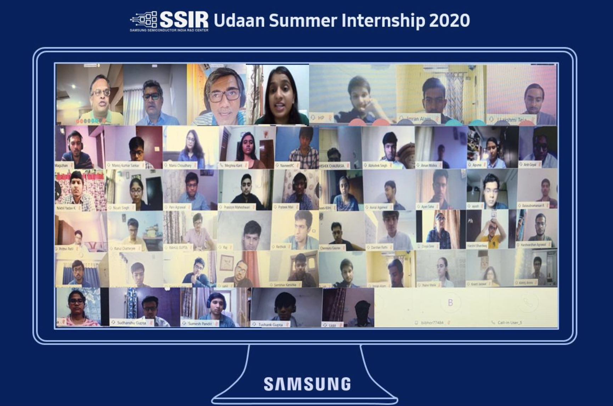
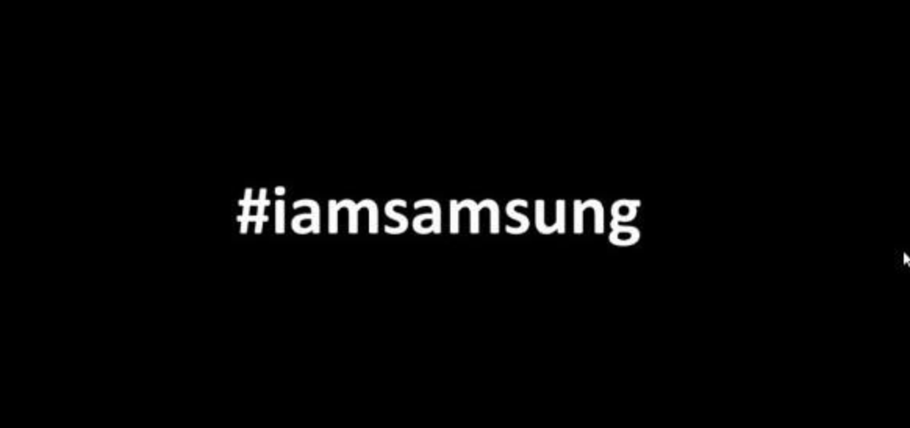

From the first year itself, you see many of your seniors going overseas for their third year
internships and you too get the urge to intern at some amazing places like Amsterdam or the USA and have fun. That or go into some big company in India with a high stipend for you to party every other weekend. Well, things don't always work out the way you want them to, very much like our hope to go to our college for the autumn semester which is going to be conducted online and you are stuck at home for another 5 months. Everything around us is a shipwreck right now and it is up to us whether we want to go sobbing in the lifeboat or sing along.
Hello readers! I am Yagya Mundra, a third-year dual degree student from the Electrical Department. This year I interned with the Memory Solutions team in Samsung R&D, Bangalore. Here are a few of my experiences about the selection process, work, and takeaways from the internship.

Pre- Internship
Never lose hope while applying for an internship since you are competing with some of the best students in India. There may be some painful instances like when your friends get selected by a company that rejected you. Sometimes some person, undeserving according to you, will get selected for some company, but it is important to remember that the interviewer knows who is better for his/her company. So stop judging people or finding mistakes in the selection procedure and look at what you have been doing wrong in your own interviews. I have always been uncertain whether I should go for a core or a non-core internship, so I applied for both. I have been shortlisted in varied companies like Qualcomm, ITC, Marico, Texas instruments, etc. Initially, in the starting interviews, I was like "Why do I even need to prepare for this interview?" but later I realized that it is one of the most important things if you want to crack it. Before your interview, be sure to ask around in the senior batches, especially the ones who have interned in the same place, and prepare accordingly. After two months of my inner turmoil this internship season, Samsung R&D opened its IAF. They had two rounds: First was a simple test on the basics of electrical engineering followed by a telephonic interview in the second round. The questions asked in the interview were pretty simple too. Most of the questions were based on designing or solving digital circuits to check your creativity and knowledge about concepts. Going through all the basic digital courses should be enough. So I got selected and was waiting to have a fun experience.

Internship Experience
Things started going sideways mid-March when we realized that we can't go to Bangalore. Almost all of my friends got interns in Bangalore in various companies and we had already decided to go for trips and parties on weekends but this pandemic has taken it all away. Most of us were worried that our internships would get cancelled since the companies were not ready to conduct virtual internships. After a lot of uncertainty in the month of April, Samsung started our internship in May.
On the first day of our internship, there was a session with all the heads of the company giving us motivational speeches about the work environment there. I am usually the type of guy who doesn't like attending all these introductory sessions but it was different this time. They conducted a very good session and it was really informative. I was really hoping to learn something good during this entire internship.
I had a group project with two other co-interns from DTU and our work was on accelerating memory using various techniques. I have never met any of them in real life but still had an amazing time with them, discussing things on WhatsApp groups and calls. There were some fun TGIF sessions as well, like a scavenger hunt and Zumba sessions too. The work-life balance was pretty good too.
This year would most probably be the last year we will be spending so much time with our family together. Although you get bored without your college bros, it still is fun spending time with your parents. I have learned driving during the starting months of this pandemic as there were no cases in our city and roads were pretty empty too. I was missing college so much that I made the "The Campus Awaits" video, a video that made me really nostalgic, and it seems that people shared my feelings too. Also, edited some other videos like old family vacation trips and trailers for a few companies as a freelancer. Binged on too many series and movies, in an unhealthy amount, that was on my watchlist for a long time now and explored some really cool genres in music too.

I can't discuss most of my work due to the confidentiality clause but overall my experience as an intern was really good. However, it would have been a lot better if we could have worked onsite instead of work from Home. The experience was very different from my expectations, but situations change and sometimes you have to adapt. This coming year's internship season would be very different and many of you may not get an internship seeing the recession. I would recommend you to work on your skills and never lose hope; Cause in the end everything will be alright.
Credits
This blog has also been uploaded by Insight, IIT Bombay. Special thanks to insight-iitb-summerblogs.